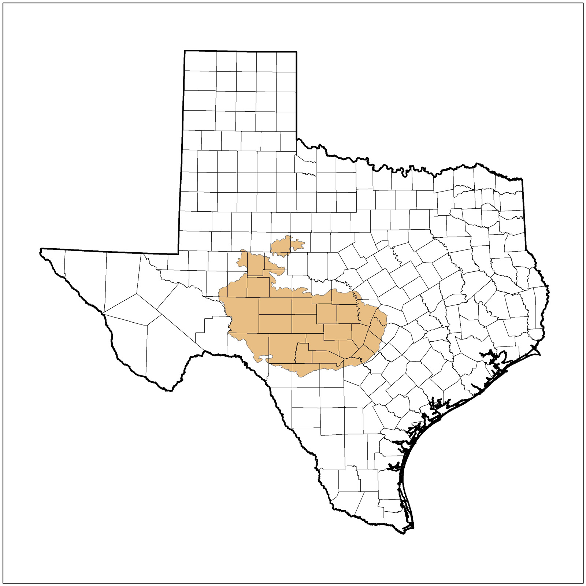

Edward's Plateau

MOST POSSIBLE Disaster: Drought because the ecoregion is really hot, and dry(especially during the summer).
Some Major Cities In This Ecoregion Are: San Angelo, Austin, San Antonio, and Del Rio
ESCAPE PLAN - 2 OPTIONS - 1. WAIT OUT THE DROUGHT. STOCK UP ON FOOD AND WATER(WATER IS VERY IMPORTANT IN A DROUGHT) AND LIVE LIFE AS NORMAL. 2. AS A DROUGHT IS NOT TOO SEVERE A DISASTER AND IT IS SEASONAL IN THIS REGION, YOU CAN JUST DRIVE OUT OF THE AREA AND SET UP A LIVELIHOOD SOMEWHERE ELSE AND COME BACK LATER.